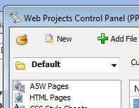

Web Projects Control Panel - Recently Selected Projects Button
FOLDED INTO WEB PROJECTS CONTROL PANEL PAGE
New button on the toolbar to show the recently selected web projects:
FOLDED INTO WEB PROJECTS CONTROL PANEL PAGE
New button on the toolbar to show the recently selected web projects: